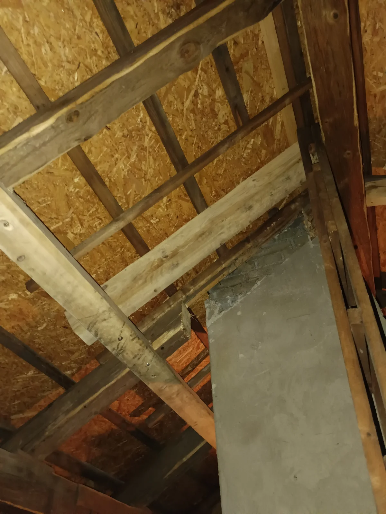
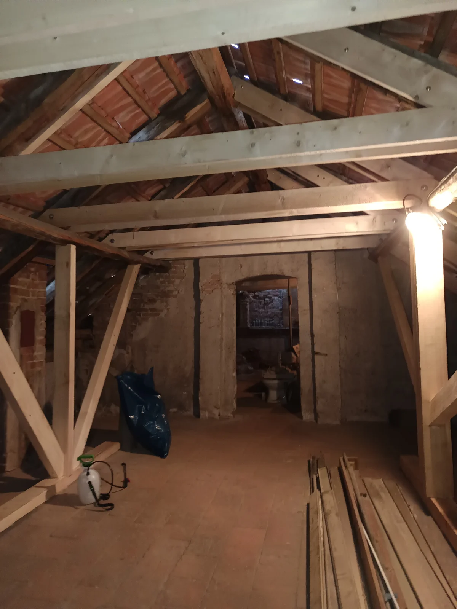
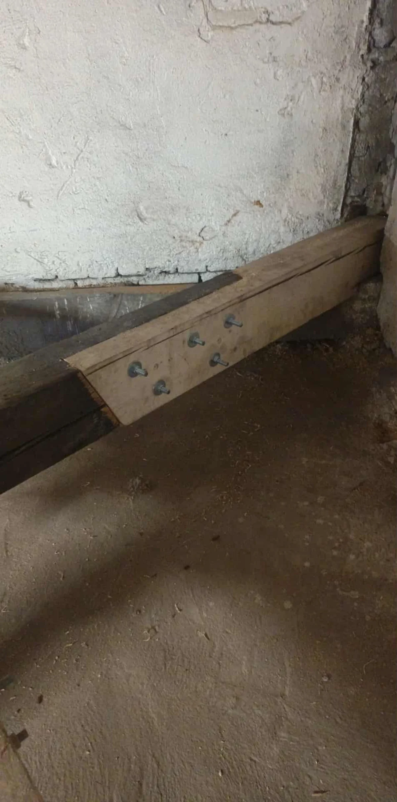
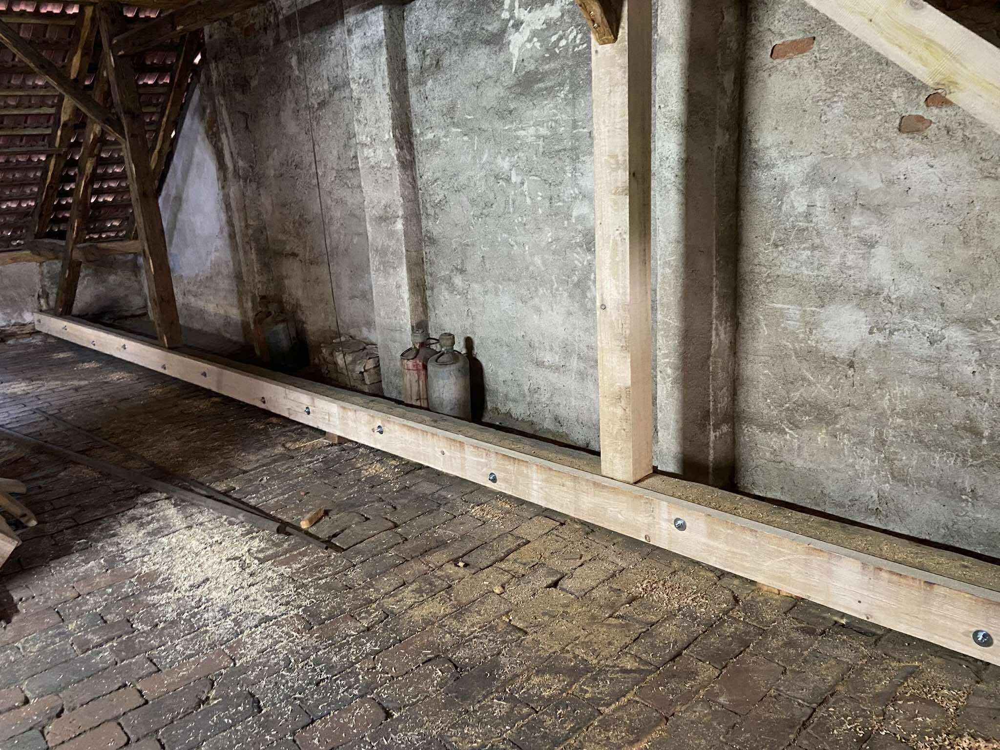
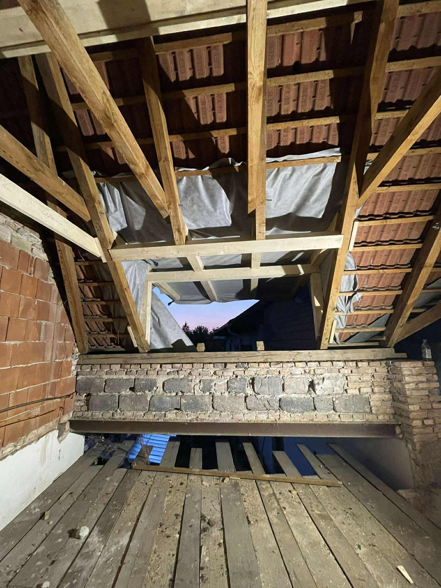
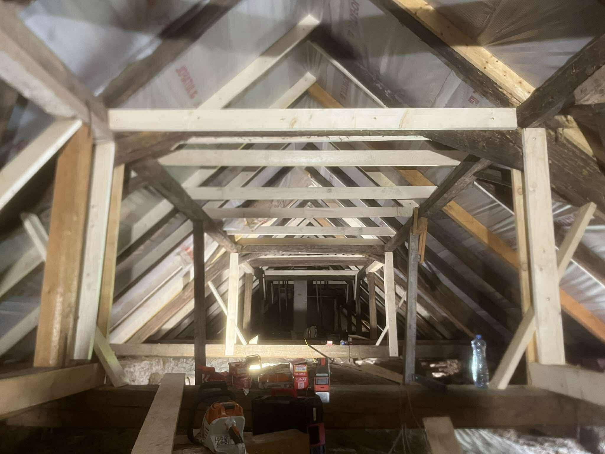
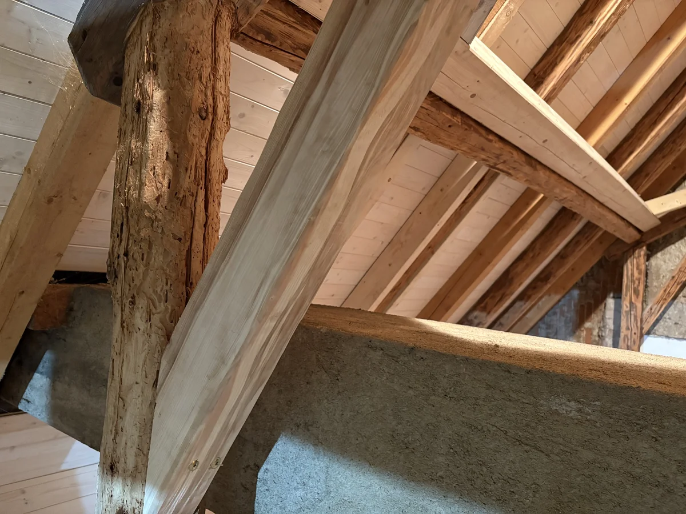
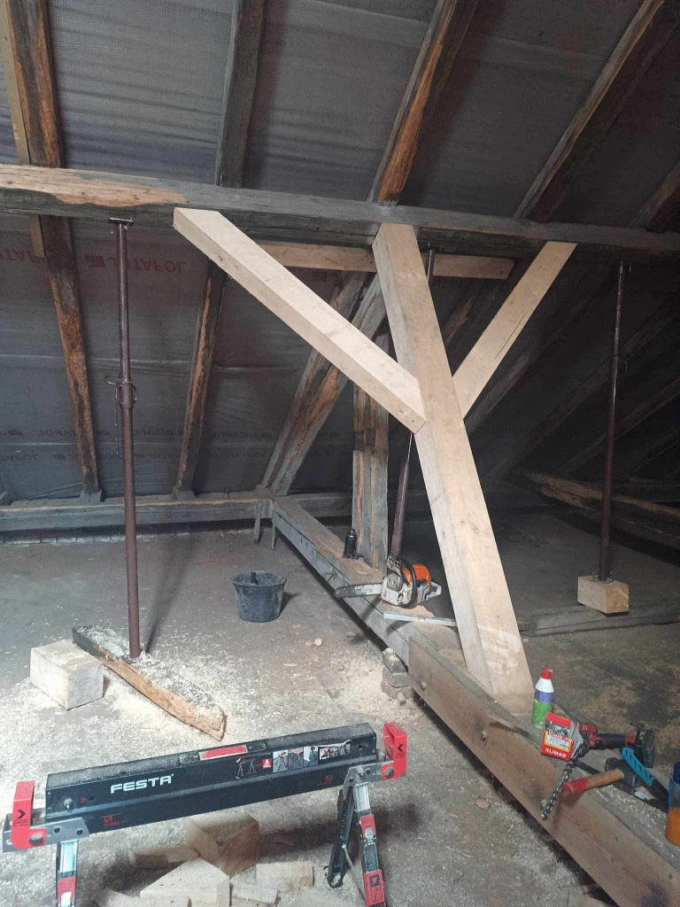
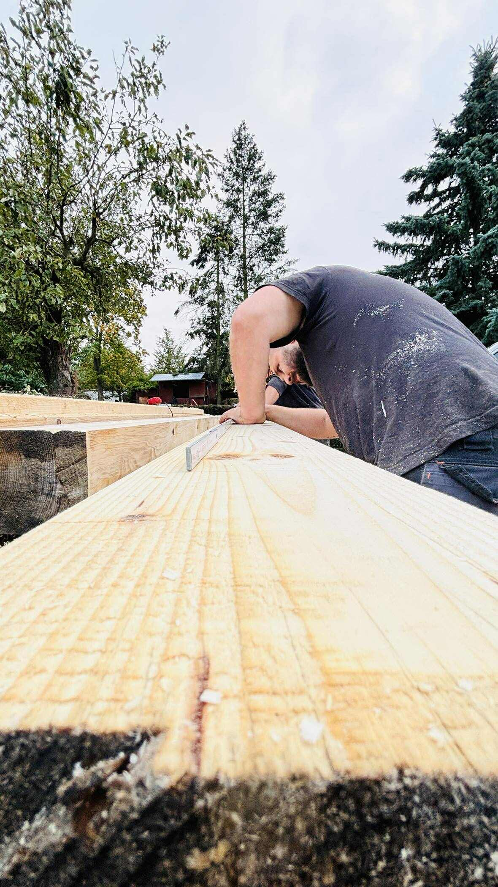

Tesařství Vyttes – Tesařské práce, opravy a rekonstrukce střech, pergoly a altány na Vysočině.
Opravy Střech
Potřebuji opravu
Tři mistři. Jedno slovo.
Jsme Jarda, Štěpán a Ondra. Nejsme developerská firma. Jsme ti, kdo vám zvednou telefon a druhý den přijedou se žebříkem. Garantujeme, že práci, kterou naceníme, také vlastníma rukama odvedeme.
Kde stavíme? Naše tesařství působí po celé Vysočině. Nejčastěji nás potkáte na střechách v městech Jihlava, Třebíč, Havlíčkův Brod, Pelhřimov a Žďár nad Sázavou, ale za zajímavou zakázkou přijedeme kamkoliv.
Specializujeme se na detailní práci se dřevem, kterou velké firmy přehlížejí.
Stavba pergol a altánů
Pergoly, Altány, Carporty, Nové střechy
Pergoly na míru
Masivní i moderní konstrukce. Přesné čepování, žádné zbytečné úhelníky.
Krytá stání
Ochrana vašeho vozu, která architektonicky ladí s domem.
Střechy na klíč
Realizujeme kompletně nové střechy. Od vázání krovů přes laťování až po pokládku krytiny. Vše poctivě a z jedné ruky.
Opravy a rekonstrukce střech
Chirurgie pro vaše krovy
Máte shnilý trám? Trápí vás zatékání do střechy? Nemusíte hned bourat. Umíme dřevo zachránit tradičními metodami. Provádíme opravy staré střechy i kompletní záchranu krovu. Řešíme i výměnu shnilých trámů, aby vaše střecha sloužila další generace.
- Protézování trámů (výměna zhlaví)
- Renovace stodol a chalup
- Statické zajištění

Proměny









Ceny a Průběh
1
Zavoláte / Pošlete fotku
Popište nám svůj projekt nebo pošlete fotku krovu. Čím více informací, tím lépe.
2
Zaměření zdarma
Přijedeme za vámi, vše zaměříme a probereme technické detaily přímo na místě.
3
Rozpočet na míru
Připravíme nezávaznou cenovou nabídku. Žádné skryté poplatky.
4
Realizace
V dohodnutém termínu nastoupíme a makáme, dokud není hotovo.
Cena je vždy individuální a odvíjí se od náročnosti a rozsahu – ať už jde o novou střechu na klíč nebo opravu historického krovu.
Chci cenovou nabídku

Poctivá práce, která vydrží generace.
Zavolejte nám
702 637 652Po-Pá: 07:00 – 18:00 (na telefonu)
Působíme převážně na Vysočině, po domluvě však realizujeme zakázky po celé České republice.
Kde tesaříme: Jihlava, Třebíč, Havlíčkův Brod, Žďár nad Sázavou, Pelhřimov, Velké Meziříčí, Humpolec, Nové Město na Moravě, Chotěboř, Bystřice n. P., Moravské Budějovice, Světlá n. S., Třešť, Ledeč n. S., Telč, Polná, Pacov, Jaroměřice n. R., Přibyslav, Jemnice, Brtnice, Žirovnice, Počátky a okolí.
Facebook: Vyttes